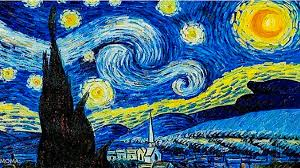
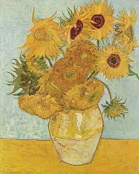
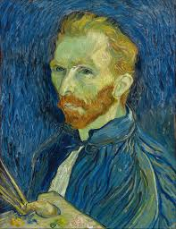

Regresar a pagina principal
Pinturas famosas de Vicent Van Gogh
Probablemente su obra más icónica, "La noche estrellada" representa un cielo nocturno lleno de estrellas y remolinos de color sobre un pequeño pueblo. La pincelada vibrante y los colores intensos transmiten una sensación de energía y movimiento, capturando la belleza y el misterio de la noche.
Más allá de ser una simple representación del cielo nocturno, "La Noche Estrellada" es una ventana al tormentoso interior de Van Gogh. El cielo, con sus remolinos de estrellas y nubes, parece hervir y vibrar, reflejando la agitación de su mente. El ciprés, símbolo de la muerte en muchas culturas, se yergue como un vigilante solitario, separando el mundo terrenal del celestial. El pueblo, con su pequeña iglesia, representa la vida y la fe, pero también sugiere la pequeñez del ser humano frente a la inmensidad del cosmos. Esta obra maestra es un testimonio de la capacidad del arte para expresar emociones profundas y universales.

Van Gogh pintó varias versiones de este tema, que se convirtió en uno de sus más reconocibles. Los girasoles, con sus colores cálidos y vibrantes, simbolizan la vida, la amistad y la felicidad. Estas obras son un ejemplo del uso expresivo del color que caracterizó su estilo.
Los girasoles de Van Gogh son mucho más que simples flores. Son un símbolo de la amistad, la vida y la pasión. Al pintarlos, Van Gogh buscaba capturar la intensidad de la luz del sur de Francia y la belleza efímera de la naturaleza. Los girasoles, con sus pétalos dorados y sus centros oscuros, se convierten en protagonistas de la escena, irradiando una energía vital que contagia al espectador. Esta serie de cuadros es un canto a la alegría de vivir y a la importancia de las relaciones humanas.

Van Gogh realizó numerosos autorretratos a lo largo de su vida. Estos retratos ofrecen una visión íntima del artista, revelando su estado emocional y psicológico. En muchos de ellos, su mirada intensa y su paleta de colores vivos transmiten una sensación de vulnerabilidad y fuerza interior.
Los autorretratos de Van Gogh son una especie de diario visual, donde el artista explora su identidad y sus emociones. En muchos de ellos, su mirada es intensa y directa, como si quisiera penetrar en el alma del espectador. La paleta de colores vibrantes y las pinceladas enérgicas subrayan la intensidad de su experiencia emocional. A través de estos autorretratos, Van Gogh nos invita a compartir su mundo interior, marcado por la lucha creativa y la soledad.

Esta obra representa a un grupo de campesinos comiendo patatas en un interior oscuro y humilde. Van Gogh buscaba capturar la autenticidad y la dureza de la vida rural, utilizando una paleta de colores terrosos y una pincelada realista.
Esta obra es un homenaje a la vida sencilla y humilde de los campesinos. Van Gogh quiso representar la autenticidad y la dureza de la vida rural, alejada de las convenciones sociales. Los campesinos, reunidos alrededor de una mesa, comparten una comida sencilla, creando una escena íntima y conmovedora. La luz tenue y los colores terrosos contribuyen a crear una atmósfera realista y conmovedora. A través de esta obra, Van Gogh buscaba conectar con las raíces de la humanidad y celebrar la belleza de lo cotidiano.
Ir arriba